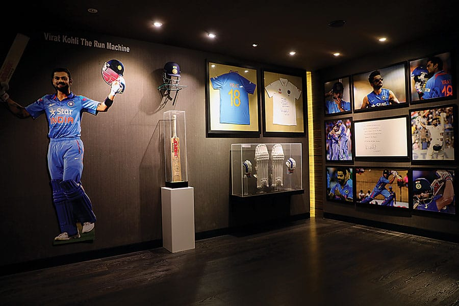

BACKBlades of Glory

Blades of Glory Cricket Museum is a cricket memorabilia museum located in Pune, Maharashtra, Indi. a former
U-19 Maharashtra cricket player, and formally inaugurated by Sachin Tendulkar in 2012.11 items, and more than
450 International Players have visited the place.